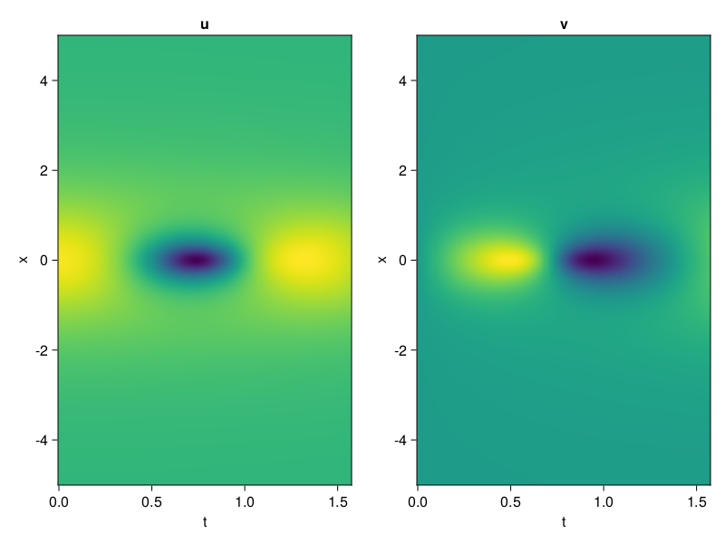
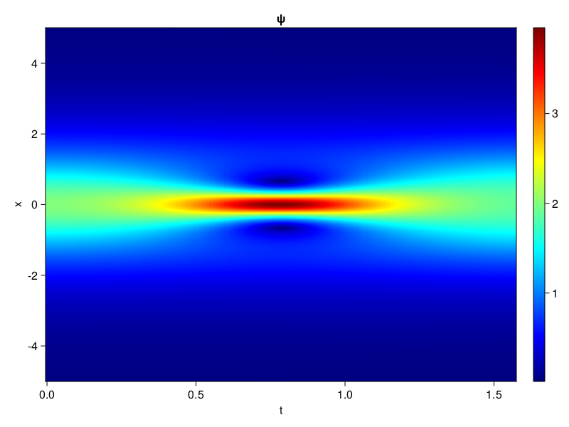
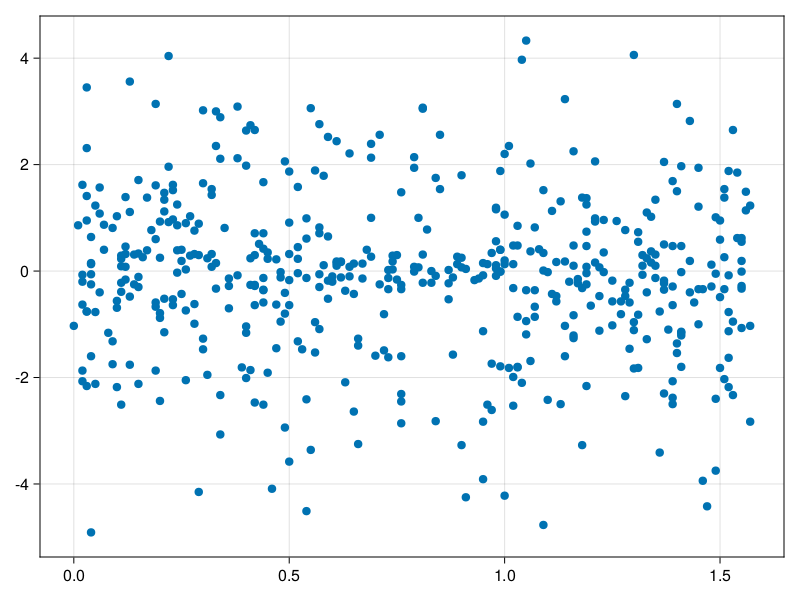

Schrödinger equation
The nonlinear Shrödinger equation is given by
\[\mathrm{i} \partial_t \psi=-\frac{1}{2} \sigma \partial_{x x} \psi-\beta|\psi|^2 \psi\]
Let $\sigma=\beta=1, \psi=u+v i$, the equation can be transformed into a system of partial differential equations
using ModelingToolkit, IntervalSets, Sophon, CairoMakie
using Optimization, OptimizationOptimJL
@parameters x,t
@variables u(..), v(..)
Dₜ = Differential(t)
Dₓ² = Differential(x)^2
eqs=[Dₜ(u(x,t)) ~ -Dₓ²(v(x,t))/2 - (abs2(v(x,t)) + abs2(u(x,t))) * v(x,t),
Dₜ(v(x,t)) ~ Dₓ²(u(x,t))/2 + (abs2(v(x,t)) + abs2(u(x,t))) * u(x,t)]
bcs = [u(x, 0.0) ~ 2sech(x),
v(x, 0.0) ~ 0.0,
u(-5.0, t) ~ u(5.0, t),
v(-5.0, t) ~ v(5.0, t)]
domains = [x ∈ Interval(-5.0, 5.0),
t ∈ Interval(0.0, π/2)]
@named pde_system = PDESystem(eqs, bcs, domains, [x,t], [u(x,t),v(x,t)])\[ \begin{align} \frac{\mathrm{d}}{\mathrm{d}t} u\left( x, t \right) =& - \frac{1}{2} \frac{\mathrm{d}}{\mathrm{d}x} \frac{\mathrm{d}}{\mathrm{d}x} v\left( x, t \right) - \left( \left|u\left( x, t \right)\right|^{2} + \left|v\left( x, t \right)\right|^{2} \right) v\left( x, t \right) \\ \frac{\mathrm{d}}{\mathrm{d}t} v\left( x, t \right) =& \frac{1}{2} \frac{\mathrm{d}}{\mathrm{d}x} \frac{\mathrm{d}}{\mathrm{d}x} u\left( x, t \right) + \left( \left|u\left( x, t \right)\right|^{2} + \left|v\left( x, t \right)\right|^{2} \right) u\left( x, t \right) \end{align} \]
pinn = PINN(u = Siren(2,1; hidden_dims=16,num_layers=4, omega = 1.0),
v = Siren(2,1; hidden_dims=16,num_layers=4, omega = 1.0))
sampler = QuasiRandomSampler(500, (200,200,20,20))
strategy = NonAdaptiveTraining(1,(10,10,1,1))
prob = Sophon.discretize(pde_system, pinn, sampler, strategy)OptimizationProblem. In-place: true
u0: ComponentVector{Float64}(u = (layer_1 = (weight = [0.14467853307724 -0.31161874532699585; 0.22662001848220825 0.4651998281478882; … ; -0.32427912950515747 0.24432837963104248; 0.3894151449203491 0.01665860414505005], bias = [0.0; 0.0; … ; 0.0; 0.0;;]), layer_2 = (weight = [-0.0349472276866436 -0.479890912771225 … 0.5259680151939392 -0.2452635020017624; 0.18035674095153809 -0.6044091582298279 … 0.1626603901386261 -0.5232518911361694; … ; 0.026698756963014603 0.5802454948425293 … -0.4606189429759979 -0.3098314106464386; -0.3596799373626709 0.6042933464050293 … -0.5346735119819641 -0.09377904236316681], bias = [0.0; 0.0; … ; 0.0; 0.0;;]), layer_3 = (weight = [-0.26892420649528503 0.4737125039100647 … 0.2994960844516754 -0.08208984136581421; -0.11836845427751541 -0.4786340594291687 … 0.5483412146568298 -0.20925988256931305; … ; 0.2821164131164551 0.5176323652267456 … -0.0005239244201220572 -0.06134200841188431; 0.3939984142780304 0.24298281967639923 … 0.4353107511997223 0.3363642394542694], bias = [0.0; 0.0; … ; 0.0; 0.0;;]), layer_4 = (weight = [0.19185839593410492 -0.19948358833789825 … -0.1278635561466217 -0.08125989884138107; 0.32405707240104675 0.13798244297504425 … 0.1994781196117401 0.07331175357103348; … ; 0.45257237553596497 -0.23617443442344666 … -0.36684316396713257 -0.547629714012146; -0.42699214816093445 -0.34331971406936646 … 0.6029650568962097 0.2471817433834076], bias = [0.0; 0.0; … ; 0.0; 0.0;;]), layer_5 = (weight = [0.13259769976139069 0.16818244755268097 … 0.27750715613365173 -0.5397621989250183], bias = [0.0;;])), v = (layer_1 = (weight = [0.1916344165802002 0.41733312606811523; -0.2386433482170105 0.032221853733062744; … ; -0.007261514663696289 0.49503445625305176; -0.3926476240158081 0.47996455430984497], bias = [0.0; 0.0; … ; 0.0; 0.0;;]), layer_2 = (weight = [0.061036065220832825 0.22223834693431854 … -0.3154142498970032 -0.21962733566761017; 0.3633485734462738 -0.08743924647569656 … -0.05789383128285408 -0.10867880284786224; … ; 0.020877625793218613 -0.3865192234516144 … 0.47203329205513 -0.2556110918521881; 0.19861553609371185 0.18430665135383606 … 0.17379531264305115 0.5746632814407349], bias = [0.0; 0.0; … ; 0.0; 0.0;;]), layer_3 = (weight = [-0.29651910066604614 0.5407649278640747 … 0.3638533651828766 -0.3611431419849396; -0.3038565218448639 -0.4396783113479614 … -0.08626992255449295 0.5181790590286255; … ; 0.35724666714668274 0.5974488258361816 … 0.16989488899707794 -0.4333433210849762; -0.5332581996917725 -0.2850063443183899 … 0.055381227284669876 -0.46651649475097656], bias = [0.0; 0.0; … ; 0.0; 0.0;;]), layer_4 = (weight = [-0.3138219118118286 0.48673272132873535 … -0.3924126923084259 0.44677650928497314; 0.4009738266468048 -0.46127235889434814 … 0.3628624677658081 0.49749958515167236; … ; 0.13723330199718475 -0.5021991729736328 … 0.02045780047774315 0.3787071406841278; 0.5155067443847656 -0.19674716889858246 … 0.33912035822868347 -0.1960972398519516], bias = [0.0; 0.0; … ; 0.0; 0.0;;]), layer_5 = (weight = [0.3570486903190613 -0.5199335217475891 … -0.13969597220420837 -0.04941117763519287], bias = [0.0;;])))Now we train the neural nets and resample data while training.
function train(pde_system, prob, sampler, strategy, resample_period = 500, n=10)
bfgs = BFGS()
res = Optimization.solve(prob, bfgs; maxiters=2000)
for i in 1:n
data = Sophon.sample(pde_system, sampler)
prob = remake(prob; u0=res.u, p=data)
res = Optimization.solve(prob, bfgs; maxiters=resample_period)
end
return res
end
res = train(pde_system, prob, sampler, strategy)u: ComponentVector{Float64}(u = (layer_1 = (weight = [0.2919512747851994 -0.6102046417038683; 0.32408734316924476 0.16285082095357195; … ; -0.867697739763069 0.9891700313057021; 0.46225507240726194 0.012404673455969238], bias = [0.3627038232107998; -0.19583833654158622; … ; -0.5861217301399895; 0.10959199235932154;;]), layer_2 = (weight = [-0.06283927559122324 -0.5425311846379134 … 0.35258629544472864 -0.26299436707976487; 0.38909837134265574 -0.7797878815333928 … -0.4155867107817955 -0.3913494566386853; … ; 0.18583181815608021 0.6001877589522143 … -0.686199676543931 -0.128811844245154; -0.36664528186614737 0.91860347427548 … 0.06092514479421087 0.21514952662943776], bias = [0.1942307916852072; 0.2488804055788948; … ; -0.13287659876070693; 0.5803930597998069;;]), layer_3 = (weight = [-0.4137177014441029 0.6192969128862851 … 0.46129230279998856 -0.4126784987448023; -0.22676052938796623 -0.740702333692432 … 0.3749407040521993 -0.45853049909314103; … ; 0.28830608145122033 0.5126466632902392 … -0.2700726363725014 -0.20304060290933842; 0.08113964964854178 0.4903333957666254 … 0.35851333245646505 -0.021044316589471968], bias = [0.28035656540089715; 0.2655330888316066; … ; -0.2309999920207507; -0.19448486038307627;;]), layer_4 = (weight = [0.22470962186961835 0.4080312453834524 … 0.015982258908210555 0.2295913231772017; -0.12336664801864852 0.4630088598151232 … 0.24064758827173757 0.07438619559929179; … ; 0.446152069829701 -0.5697273379576889 … -0.25458553982791315 -0.5277137217022358; -0.5129425091744676 -0.3075056198744718 … 0.751956027886713 -0.29730681050991764], bias = [-0.01141306642771911; 0.23425903252771796; … ; 0.027368313512301824; -0.2848375448405993;;]), layer_5 = (weight = [0.6451132549365036 0.5685382588907273 … 1.5998175250602222 -0.16966393671622207], bias = [0.07952319275388159;;])), v = (layer_1 = (weight = [0.41229593879250487 0.2703406459164507; -0.4548336466398107 -0.07457425679999466; … ; 0.2949898047223278 0.5060001968464733; -0.816382825372999 0.08854693239408608], bias = [-0.3974482228820274; 0.05253711998035188; … ; 0.012415593811200162; 0.5722139159485393;;]), layer_2 = (weight = [-0.21177040711119413 0.2360070601891093 … -0.3583182160003554 0.03393319890260505; 0.5633924662652512 -0.46243900109192676 … -0.08059433931764658 0.07177521938551466; … ; 0.001792177297014254 -0.37545567219729764 … 0.5231091014988677 0.07479192696482637; 0.1464149669053736 0.35994377821428597 … 0.03796761652085375 0.38668747458950925], bias = [0.03209297311293041; 0.26762920070780755; … ; 0.14956656651965455; 0.24071419482471756;;]), layer_3 = (weight = [0.04621844708515311 0.3102924090951237 … 0.14918070217114202 0.04912253578490301; -0.7570350785374366 -0.5093862278100828 … -0.6316133040338641 0.6026692933128026; … ; 0.1672992246632144 0.8710125000982057 … 0.3021285413461793 -0.15651118816239923; -0.7446496151214382 -0.5324361881684675 … -0.11219381356276516 -0.45007164261589183], bias = [0.2600003009529956; -0.46534594502174537; … ; 0.005249742533356252; 0.243572994705418;;]), layer_4 = (weight = [-0.6144669977308417 0.2350107352460527 … -0.5740015673302462 0.5971389622255858; 0.42463830421603577 -0.3456759699482975 … 0.2623978025534954 0.9685523379501324; … ; 0.019917646259581704 -0.4013696989680026 … -0.14284448845234463 0.39010436021659195; 0.5822271512792384 0.164201483944109 … 0.23609421422342305 -0.39160577941144853], bias = [-0.3419694964381415; 0.06023367791834765; … ; 0.11875899410692; -0.5585288572351377;;]), layer_5 = (weight = [1.1072650002154374 -0.8027182246356345 … -0.07897571290240997 0.5530004213432886], bias = [0.141384668116225;;])))phi = pinn.phi
ps = res.u
xs, ts= [infimum(d.domain):0.01:supremum(d.domain) for d in pde_system.domain]
u = [sum(phi.u(([x,t]), ps.u)) for x in xs, t in ts]
v = [sum(phi.v(([x,t]), ps.v)) for x in xs, t in ts]
ψ = @. sqrt(u^2+ v^2)
axis = (xlabel="t", ylabel="x", title="u")
fig, ax1, hm1 = heatmap(ts, xs, u', axis=axis)
ax2, hm2= heatmap(fig[1, end+1], ts, xs, v', axis= merge(axis, (; title="v")))
display(fig)
axis = (xlabel="t", ylabel="x", title="ψ")
fig, ax1, hm1 = heatmap(ts, xs, ψ', axis=axis, colormap=:jet)
Colorbar(fig[:, end+1], hm1)
display(fig)
Customize Sampling
Bascially any sampling method is supportted. For example we can sample data according to the predicted solution.
using StatsBase
data = vec([[x, t] for x in xs, t in ts])
wv = vec(ψ)
new_data = wsample(data, wv, 500)
new_data = reduce(hcat, new_data)
fig, ax = scatter(new_data[2,:], new_data[1,:])
prob.p[1] = new_data
prob.p[2] = new_data
prob = remake(prob; u0 = res.u)
# res = Optimization.solve(prob, bfgs; maxiters=1000)OptimizationProblem. In-place: true
u0: ComponentVector{Float64}(u = (layer_1 = (weight = [0.2919512747851994 -0.6102046417038683; 0.32408734316924476 0.16285082095357195; … ; -0.867697739763069 0.9891700313057021; 0.46225507240726194 0.012404673455969238], bias = [0.3627038232107998; -0.19583833654158622; … ; -0.5861217301399895; 0.10959199235932154;;]), layer_2 = (weight = [-0.06283927559122324 -0.5425311846379134 … 0.35258629544472864 -0.26299436707976487; 0.38909837134265574 -0.7797878815333928 … -0.4155867107817955 -0.3913494566386853; … ; 0.18583181815608021 0.6001877589522143 … -0.686199676543931 -0.128811844245154; -0.36664528186614737 0.91860347427548 … 0.06092514479421087 0.21514952662943776], bias = [0.1942307916852072; 0.2488804055788948; … ; -0.13287659876070693; 0.5803930597998069;;]), layer_3 = (weight = [-0.4137177014441029 0.6192969128862851 … 0.46129230279998856 -0.4126784987448023; -0.22676052938796623 -0.740702333692432 … 0.3749407040521993 -0.45853049909314103; … ; 0.28830608145122033 0.5126466632902392 … -0.2700726363725014 -0.20304060290933842; 0.08113964964854178 0.4903333957666254 … 0.35851333245646505 -0.021044316589471968], bias = [0.28035656540089715; 0.2655330888316066; … ; -0.2309999920207507; -0.19448486038307627;;]), layer_4 = (weight = [0.22470962186961835 0.4080312453834524 … 0.015982258908210555 0.2295913231772017; -0.12336664801864852 0.4630088598151232 … 0.24064758827173757 0.07438619559929179; … ; 0.446152069829701 -0.5697273379576889 … -0.25458553982791315 -0.5277137217022358; -0.5129425091744676 -0.3075056198744718 … 0.751956027886713 -0.29730681050991764], bias = [-0.01141306642771911; 0.23425903252771796; … ; 0.027368313512301824; -0.2848375448405993;;]), layer_5 = (weight = [0.6451132549365036 0.5685382588907273 … 1.5998175250602222 -0.16966393671622207], bias = [0.07952319275388159;;])), v = (layer_1 = (weight = [0.41229593879250487 0.2703406459164507; -0.4548336466398107 -0.07457425679999466; … ; 0.2949898047223278 0.5060001968464733; -0.816382825372999 0.08854693239408608], bias = [-0.3974482228820274; 0.05253711998035188; … ; 0.012415593811200162; 0.5722139159485393;;]), layer_2 = (weight = [-0.21177040711119413 0.2360070601891093 … -0.3583182160003554 0.03393319890260505; 0.5633924662652512 -0.46243900109192676 … -0.08059433931764658 0.07177521938551466; … ; 0.001792177297014254 -0.37545567219729764 … 0.5231091014988677 0.07479192696482637; 0.1464149669053736 0.35994377821428597 … 0.03796761652085375 0.38668747458950925], bias = [0.03209297311293041; 0.26762920070780755; … ; 0.14956656651965455; 0.24071419482471756;;]), layer_3 = (weight = [0.04621844708515311 0.3102924090951237 … 0.14918070217114202 0.04912253578490301; -0.7570350785374366 -0.5093862278100828 … -0.6316133040338641 0.6026692933128026; … ; 0.1672992246632144 0.8710125000982057 … 0.3021285413461793 -0.15651118816239923; -0.7446496151214382 -0.5324361881684675 … -0.11219381356276516 -0.45007164261589183], bias = [0.2600003009529956; -0.46534594502174537; … ; 0.005249742533356252; 0.243572994705418;;]), layer_4 = (weight = [-0.6144669977308417 0.2350107352460527 … -0.5740015673302462 0.5971389622255858; 0.42463830421603577 -0.3456759699482975 … 0.2623978025534954 0.9685523379501324; … ; 0.019917646259581704 -0.4013696989680026 … -0.14284448845234463 0.39010436021659195; 0.5822271512792384 0.164201483944109 … 0.23609421422342305 -0.39160577941144853], bias = [-0.3419694964381415; 0.06023367791834765; … ; 0.11875899410692; -0.5585288572351377;;]), layer_5 = (weight = [1.1072650002154374 -0.8027182246356345 … -0.07897571290240997 0.5530004213432886], bias = [0.141384668116225;;])))